Mumbai, India's largest coastal metropolis and financial capital, sits where the Arabian Sea meets one of South Asia's most intense monsoon systems. Using the same 30-year historical reanalysis methodology applied to Delhi, Karachi, and every other city in this series, the data shows a city where both halves of the climate equation — heat and rainfall — are moving in the same direction at once: up.
What sets Mumbai apart isn't just the direction of these trends but their unevenness. The steadiest long-term warming shows up in the pre-monsoon hot season, while winter — historically Mumbai's most stable season — has abruptly caught fire since 2023, jumping over two degrees in three years.
All figures below come from ERA5/ERA5-Land reanalysis data (Copernicus/ECMWF), covering 1995 through 2025, visualized through our interactive Climate Trend Dashboard.
Annual Mean Temperature
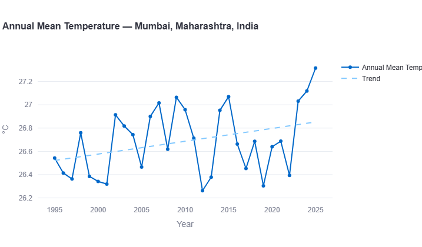
Mumbai's annual mean temperature climbs unevenly across the record — starting near 26.55°C in the mid-1990s, dipping to a record low of 26.25°C in 2012, then rising sharply through the final years of the dataset. The record's warmest year, 2025, reaches 27.3°C, following closely on 2024's 27.1°C.
Key Figure: Warming Rate
A moderate pace by the standards of this series — faster than Karachi (0.13°C/decade) or Lahore (0.13°C/decade), slower than Dhaka (0.30°C/decade) and far behind Islamabad's outlier 0.77°C/decade. The trend line, however, understates the last three years: Mumbai's annual mean jumped from about 26.4°C in 2022 to 27.3°C in 2025, nearly a full degree in a span that would normally take three to four decades at the underlying rate.
Extreme Heat: Days Above Threshold
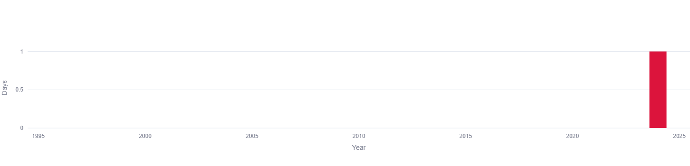
Mumbai's coastal position keeps extreme heat rare compared to inland cities in this series. The 30-year record sits at essentially zero for almost the entire period, with a single flagged occurrence around 2023–24 — a data point too isolated to call a trend, but one that lines up with the same 2022–2025 window in which Mumbai's annual, winter, and pre-monsoon means all jumped sharply.
Annual Total Precipitation
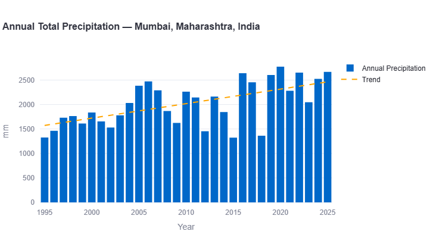
Annual rainfall shows the steepest precipitation trend of any city in this series so far — rising from a trend-line baseline near 1,550mm in the mid-1990s to roughly 2,450mm by 2025. The wettest year on record is 2020, spiking to nearly 2,750mm, while 1995 recorded one of the driest totals at around 1,300mm.
Key Figure: Precipitation Trend
By far the strongest precipitation trend recorded in this series — roughly three times Karachi's rate and well ahead of Delhi, Colombo, and Kathmandu. Unlike Dhaka, where rainfall is trending down even as temperature rises, Mumbai is getting hotter and wetter simultaneously, a combination with real implications for urban flood risk (see below).
Seasonal Trend Breakdown
Breaking the data down — Winter (December–February), Pre-Monsoon/Hot (March–May), Monsoon (June–September), and Post-Monsoon (October–November) — shows which season is actually driving Mumbai's headline numbers.
Winter (Dec-Feb)
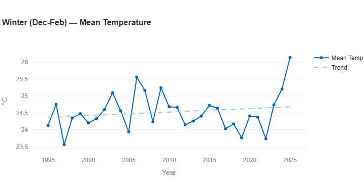
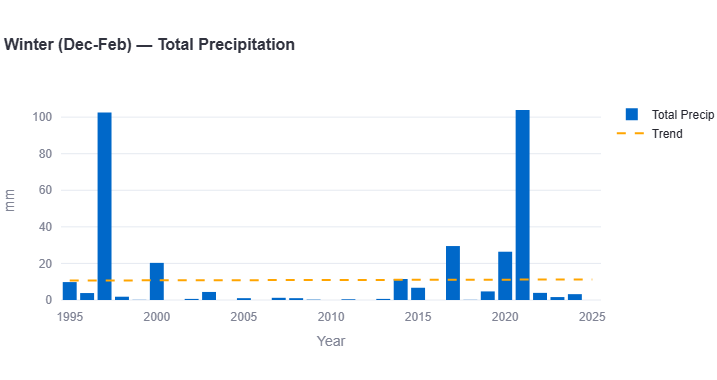
Mumbai's "winter" rarely feels cold — mean temperatures held in a fairly narrow 24–25°C band for two decades — but this is the season showing the sharpest recent acceleration in the entire record. Winter mean temperature jumped from about 23.9°C in 2022 to 25.2°C in 2024 and 26.1°C in 2025 — a rise of roughly 2.2°C in three years.
Key Figures: Winter
Warming rate: approximately +0.15°C per decade over the full record (but +2.2°C in the last 3 years alone)
Precipitation trend: essentially flat
Winter remains Mumbai's driest season overall — mostly near zero — punctuated by isolated anomalous events such as 1996 (~103mm) and 2021 (~104mm), likely tied to unusual western disturbance or cyclonic activity reaching the coast.
Pre-Monsoon / Hot (Mar-May)
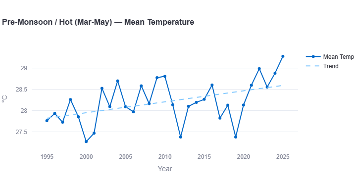
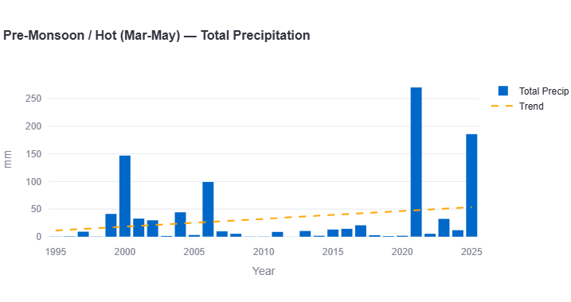
This is where Mumbai's warming signal is steadiest and least noisy. Mean temperatures climb from around 27.8°C in the mid-1990s to a record 29.3°C in 2025 — a sustained rise with none of the sharp reversals seen in other seasons.
Key Figures: Pre-Monsoon
Warming rate: approximately +0.27°C per decade (fastest sustained season)
Precipitation trend: approximately +15mm per decade
Precipitation in this normally dry season has grown more erratic rather than simply wetter, with an unusually large spike in 2021 (~270mm) and again in 2025 (~185mm), likely linked to pre-monsoon thunderstorm clusters or cyclonic disturbances in the Arabian Sea.
Monsoon (Jun-Sep)
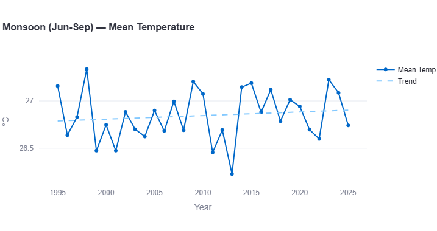
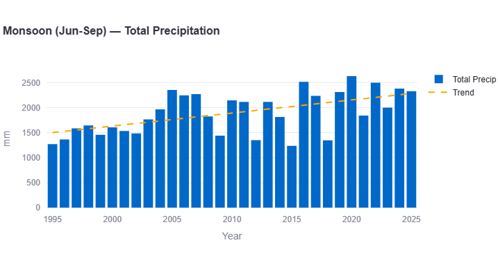
Monsoon temperatures stay close to 26.7–27.0°C across the record, moving only slightly — by far the slowest-warming season in Mumbai's data, a pattern Mumbai shares with Islamabad, where monsoon is also the slowest-warming season while other seasons run hot.
Key Figures: Monsoon
Warming rate: approximately +0.05°C per decade (slowest season, essentially flat)
Precipitation trend: approximately +233mm per decade
Monsoon rainfall — which supplies roughly 85% of Mumbai's annual total — shows the strongest seasonal precipitation increase in this report, rising from a trend-line baseline near 1,500mm to roughly 2,200mm by 2025. The wettest monsoon on record is 2020 (~2,620mm); cloud cover and persistent rain appear to buffer monsoon-season heat even as rainfall totals climb.
Post-Monsoon (Oct-Nov)
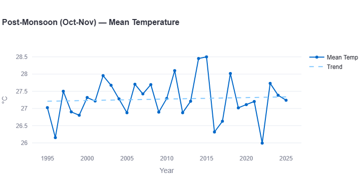
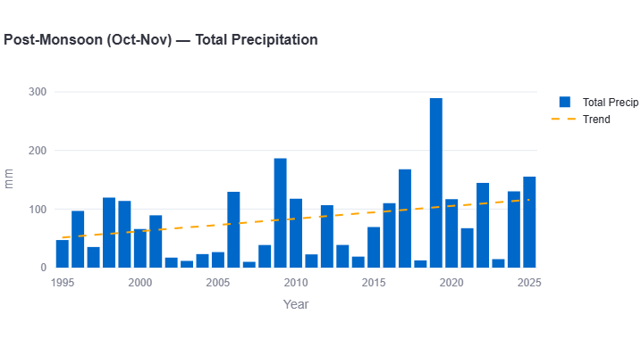
Post-monsoon temperatures stay comparatively stable around 27–27.5°C, though with real volatility — a spike to 28.5°C in 2014–15 and a cooler dip to 26°C in 2022.
Key Figures: Post-Monsoon
Warming rate: approximately flat to marginally positive
Precipitation trend: approximately +23mm per decade
The retreating monsoon shows a modest but visible upward rainfall trend, from roughly 50mm in 1995 to totals commonly above 100–150mm in the last decade, including an extreme outlier in 2019 (~290mm) — likely associated with a tropical cyclone or deep depression in the Arabian Sea.
What This Means for Mumbai
- Heat and rainfall are rising together, not trading off. Unlike Dhaka, where warming has come with declining rainfall, Mumbai is getting hotter and wetter at the same time — a combination that compounds rather than offsets urban climate risk.
- The monsoon's rainfall trend is the standout figure in this entire series. At roughly +300mm per decade annually, Mumbai's precipitation increase outpaces every other city studied so far, driven almost entirely by an intensifying June–September monsoon.
- Winter's sudden 2023–2025 jump deserves close watching, not overinterpretation. Three data points don't confirm a new baseline, but the magnitude and timing line up with acceleration seen elsewhere in Mumbai's record during the same window.
- Rising rainfall on a low-lying, densely built coastline is a flood-risk story as much as a climate one. With much of the city at or near sea level and drainage infrastructure built for an earlier rainfall regime, more concentrated high-intensity rain events translate directly into higher urban flood exposure.
Mumbai Compared to India's Other Cities
With two of India's major cities in this series now analyzed — Mumbai and Delhi — the contrast is instructive.
Delhi's fastest-warming season is post-monsoon, and its annual warming rate (~0.15°C/decade) is more moderate than Mumbai's (~0.25°C/decade). Delhi's extreme-heat exposure (20-50+ days/year above 40°C) dwarfs Mumbai's near-zero count, reflecting Delhi's inland, continental setting versus Mumbai's coastal moderation. But on rainfall, Mumbai is the far more dramatic story: its precipitation trend (~+300mm/decade) runs many times steeper than Delhi's (~+35mm/decade), a direct consequence of Mumbai's direct monsoon and cyclone exposure on the Arabian Sea coast.
How Mumbai Compares Across the Region
With eight South Asian cities now analyzed using the same methodology, Mumbai stands out specifically for its rainfall trend — the steepest of any city studied — while its warming rate sits in the moderate middle of the pack.
| Metric | Karachi | Delhi | Dhaka | Colombo | Kathmandu | Lahore | Islamabad | Mumbai |
|---|---|---|---|---|---|---|---|---|
| Annual warming (°C/dec) | 0.13 | ~0.15 | ~0.30 | ~0.15 | ~−0.04 | ~0.13 | ~0.77 | ~0.25 |
| Annual precip (mm/dec) | +88.7 | ~+35 | ~−140 | ~+170 | ~+50 | ~+10 | ~+60 | ~+300 |
| Fastest season | Monsoon | Post-Mon. | Monsoon | Monsoon | Monsoon | Monsoon | Winter | Pre-Monsoon |
| Extreme heat (≥40°C, days/yr) | 0-5 | 20-50+ | ~0 | 0 | 0 | 20-46 | 0-20 (noisy) | ~0 (1 flagged yr) |
Mumbai's rainfall trend is more than three times steeper than the next-highest coastal city (Karachi, +88.7mm/decade), underscoring how directly Arabian Sea moisture and an intensifying monsoon are reshaping the city's climate risk profile. On temperature, Mumbai sits in the moderate middle of this series — nowhere near Islamabad's outlier warming, but faster than Karachi, Lahore, or Kathmandu.
Search any South Asian city and see its own temperature, rainfall, and monsoon trends, built from 30 years of data.
Open the Interactive Dashboard →Data Source & Methodology
All figures in this report are derived from the Open-Meteo Historical Weather API, built on ERA5 and ERA5-Land reanalysis data produced by the European Centre for Medium-Range Weather Forecasts (ECMWF) through the Copernicus Climate Change Service. Trend rates are estimated by reading the linear regression trend line plotted on each chart across the full 1995–2025 period.
Seasonal boundaries follow the standard South Asian meteorological convention: Winter (December–February), Pre-Monsoon/Hot (March–May), Monsoon (June–September), and Post-Monsoon (October–November).
As with every city in this series, reanalysis data at 9-25km grid resolution smooths out very local variation — Mumbai's true street-level experience of heat and flooding, shaped by its coastline, density, and drainage infrastructure, will vary from the citywide averages reported here.
Frequently Asked Questions
Is Mumbai's climate getting warmer?
Yes. ERA5-Land reanalysis data from 1995–2025 shows Mumbai's annual mean temperature rising from around 26.55°C to a record 27.3°C in 2025, an estimated pace of roughly +0.25°C per decade — with a notably sharper rise in the last three years.
Which season is warming fastest in Mumbai?
Over the full 30-year record, the pre-monsoon/hot season (March–May) shows the steadiest long-term warming, at roughly +0.27°C per decade, rising from about 27.8°C to a record 29.3°C. Winter, however, has warmed most sharply in just the last three years, jumping by more than 2°C between 2022 and 2025.
Is Mumbai getting more rainfall?
Yes, substantially — annual total precipitation has risen from around 1,550mm (trend-line baseline) in the mid-1990s to roughly 2,450mm by 2025, an estimated +300mm per decade, the steepest precipitation trend of any city analyzed in this series so far. The increase is driven mainly by an intensifying monsoon season (June–September), which supplies roughly 85% of the city's annual rain.
How does Mumbai compare to Delhi and other South Asian cities?
Mumbai's warming rate (~0.25°C/decade) is faster than Karachi and Lahore but well behind Islamabad's regional outlier of ~0.77°C/decade. Where Mumbai stands apart is rainfall: its precipitation trend is more than three times steeper than any other city studied, a direct result of its coastal exposure to an intensifying Arabian Sea monsoon.
Does Mumbai see extreme heat above 40°C?
Very rarely. Mumbai's coastal position keeps extreme heat days close to zero across the entire 30-year record, with a single flagged occurrence around 2023–24 — a sharp contrast to inland cities like Delhi or Lahore, which see dozens of such days per year.
Why does Mumbai's monsoon matter so much for the city's climate risk?
Because Mumbai sits largely at or near sea level with aging drainage infrastructure, an intensifying monsoon translates directly into higher urban flood risk — not simply more rainy days, but more concentrated, high-intensity rain events of the kind that have repeatedly disrupted the city in recent years.
See how Mumbai compares across the region in our South Asia climate trend report, covering all 8 cities in this series. For how Mumbai's own monsoon-reliant rainfall trend factors into the 2026 season, see our 2026 monsoon update, and see where Mumbai ranks in our full warming-rate ranking.